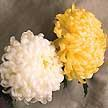

O ESPÍRITO SANTO
dá a JESUS uma eficiente atualidade, revelando quem ELE é, realçando a grandeza
de Sua Divina Missão e conduzindo a Obra Redentora de modo que
apareçam os frutos em favor de todas as gerações. É assim, que
o ESPÍRITO DE DEUS tem a grande tarefa de impulsionar as criaturas
à vencerem as dificuldades e realizarem sua vocação. Com este
objetivo, vem recordar os ensinamentos de CRISTO e derramar dons
sobre as pessoas, aprimorando as qualidades e aperfeiçoando as
virtudes, inspirando iniciativas, vivificando e santificando,
dando disposição e coragem para os embates do cotidiano, estimulando
a caridade, revigorando a fé, fazendo com que haja justiça,
fraternidade e paz, desabrochando a esperança de dias melhores,
implantando e consolidando o amor.
realçando a grandeza
de Sua Divina Missão e conduzindo a Obra Redentora de modo que
apareçam os frutos em favor de todas as gerações. É assim, que
o ESPÍRITO DE DEUS tem a grande tarefa de impulsionar as criaturas
à vencerem as dificuldades e realizarem sua vocação. Com este
objetivo, vem recordar os ensinamentos de CRISTO e derramar dons
sobre as pessoas, aprimorando as qualidades e aperfeiçoando as
virtudes, inspirando iniciativas, vivificando e santificando,
dando disposição e coragem para os embates do cotidiano, estimulando
a caridade, revigorando a fé, fazendo com que haja justiça,
fraternidade e paz, desabrochando a esperança de dias melhores,
implantando e consolidando o amor.
Em muitas ocasiões, o ESPÍRITO age na contradição dos acontecimentos, principalmente no meio dos fracos e acovardados pela injustiça e perseguições. Também atua junto aos condenados a morte, por doença ou acidente, infundindo-lhes uma imensa resistência e uma esperança ilimitada na misericórdia Divina. ELE é como uma chama que nunca se apaga, bruxuleante mantém-se acesa, apesar de todas as dificuldades, dos empecilhos que surgem e das ocorrências adversas. Mantém-se acesa como um baluarte invencível, inexpugnável, que confere uma confiança imorredoura e estimula a vontade de vencer, que infunde forças para reagir fazendo surgir idéias, objetivando transpor as barreiras e os obstáculos, assim como consolando e confortando em muitas ocasiões, quando acontecem os reveses e as quedas, abrindo espaço na alma, para que DEUS ocupe uma maior dimensão, resultando sempre em grande benefício para o fiel, numa prodigiosa e incalculável paz interior, porque ELE é Amor e Comunicação de Vida.
Sacramento do Batismo -
Pelo Sacramento do Batismo as pessoas recebem o DIVINO ESPÍRITO SANTO pela primeira vez, através da infusão da água (derramamento de água na cabeça do batizando). O ESPÍRITO infunde uma quantidade notável de graças sacramentais e santificantes na alma do catecúmeno: neutralizando o efeito do Pecado Original, perdoando os pecados cometidos até aquele dia (caso de batismo de adultos), coloca no coração do batizando as três Virtudes Teologais: Fé, Esperança e Caridade, concede-lhe a identidade de "cristão", membro da Igreja e participante do sacerdócio de CRISTO, além do caráter sacramental de "filho de DEUS" .
Isto significa dizer, que através do Sacramento do Batismo, o ESPÍRITO SANTO transforma os "novos cristãos", em verdadeiros "Santos", fazendo-os renascerem para uma nova vida em DEUS :
"Em verdade, em verdade, te digo: quem não nascer da água e do ESPÍRITO não pode entrar no Reino de DEUS" . (Jo 3,5)
Esta é a razão porque devemos ter pressa em batizar os nossos filhos e afilhados, a fim de que recebam estas graças e participem da vida Divina, o mais cedo possível.
"Ou não sabeis que todos os que fomos batizados em CRISTO JESUS, é na sua morte que fomos batizados ? Pois pelo batismo nós fomos sepultados com ELE na morte para que, como CRISTO foi ressuscitado dentre os mortos pela glória do PAI, assim também nós vivamos vida nova". (Rm 6,3-4)
Ressuscitados com CRISTO para uma
vida nova, a humanidade batizada alcança uma  preciosa vitória sobre o pecado, porque passa a
dispor de eficazes instrumentos para combatê-lo. Significa
dizer, que a humanidade batizada é convidada a uma
vida plena de amor na graça de DEUS.
preciosa vitória sobre o pecado, porque passa a
dispor de eficazes instrumentos para combatê-lo. Significa
dizer, que a humanidade batizada é convidada a uma
vida plena de amor na graça de DEUS.
"... sabendo que nosso velho homem foi crucificado com ELE (JESUS) para que fosse destruído este corpo de pecado (os pecados que cometemos) , e assim não sirvamos mais ao pecado". (Rm 6,6)
Pelo batismo, também começamos a fazer parte do Corpo Místico de CRISTO, ou seja, participante da sua Igreja, da qual ELE é a Cabeça; nos transformamos em tabernáculos de DEUS: do PAI, do FILHO e do ESPÍRITO SANTO, albergando as Três Pessoas Divinas em nosso coração, oferecendo espaço para o ESPÍRITO DE DEUS atuar maravilhosamente em nossa existência e realizar a sua benéfica missão de implantar na humanidade, as graças que emanam da heróica Redenção consumada por JESUS, a fim de nos proporcionar uma verdadeira vida em DEUS: ressuscitando-nos com CRISTO para uma vida nova, santificando o nosso corpo e o espírito, cumulando as pessoas com as graças e os carismas necessários à concretização dos ideais e colaborando, para que haja vida em plenitude no corpo físico, sujeito às tentações, doenças e morte.
"Ou não sabeis que o vosso corpo é templo do ESPÍRITO SANTO, que está em vós e que recebestes de DEUS ?... e que, portanto, não pertenceis a vós mesmos". (1 Cor 6,19)
Por isso também, compreende-se a
necessidade dos "pais"
e "padrinhos",
estimularem o 
Os demais Sacramentos que também foram criados por JESUS, são utilizados pela Igreja e ministrados somente aos que receberam o Batismo.